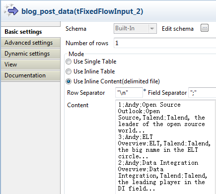
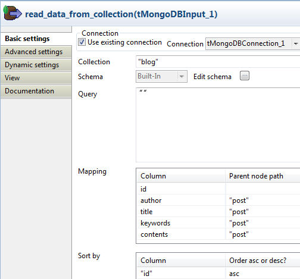
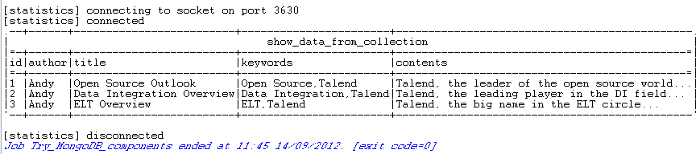
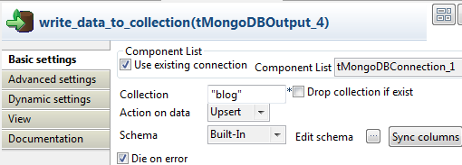
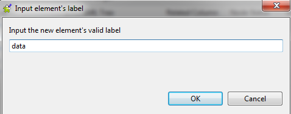
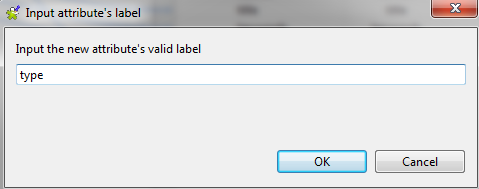
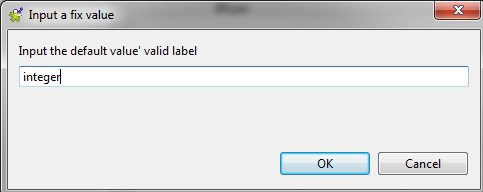

Avertissement
Ce composant est disponible dans la Palette du Studio si vous avez souscrit à l'édition correspondante de Talend Big Data Studio.
|
Famille de composant |
Big Data / MongoDB | |
|
Fonction |
Le composant tMongoDBOutput exécute l'action définie sur la collection dans la base de données Mongo, à partir du flux entrant du composant précédent dans le Job. | |
|
Objectif |
Ce composant exécute une action définie sur une collection dans la base de données Mongo. | |
|
Basic settings |
Use existing connection |
Cochez cette case et sélectionnez le composant de connexion adéquat à partir de la liste Component list pour réutiliser les paramètres d’une connexion que vous avez déjà définie. |
| Use replica set address |
Cochez cette case pour afficher la table Replica adddress. Dans la table Replica address, vous pouvez configurer différents serveurs de la base de données Mongo pour le failover. Cette option est disponible lorsque la case Use existing connection n'est pas cochée. | |
|
|
Server et Port |
Adresse IP et port d'écoute du serveur de la base de données. Ces champs sont disponibles lorsque les cases Use existing connection et Use replica set address ne sont pas cochées. |
|
|
Database |
Nom de la base de données. |
|
|
Required authentication |
Cochez cette case pour activer l'authentification à la base de données. |
|
|
Username et Password |
Informations d'authentification de l'utilisateur à la base de données. Ces champs sont disponibles lorsque la case Required authentication est cochée. |
|
|
Collection |
Nom de la collection dans la base de données Mongo. |
|
|
Drop collection if exist |
Cochez cette case afin de supprimer la collection si elle existe déjà. |
|
|
Action on data |
Les opérations suivantes sont disponibles : Insert : insérer des données. Update : mettre à jour des données. Upsert : mettre à jour et insérer des données. Delete : supprimer des données. |
|
Schema et Edit Schema |
Un schéma est une description de lignes, il définit le nombre de champs qui sont traités et passés au composant suivant. Le schéma est soit local (built-in) soit distant dans le Repository. Si vous utilisez Talend Open Studio for Big Data, seul le mode Built-in est disponible. Cliquez sur Edit Schema pour modifier le schéma. Notez que si vous modifiez le schéma, il devient automatiquement built-in. Cliquez sur Sync columns pour récupérer le schéma du composant précédent dans le Job. | |
|
|
Mapping |
Spécifiez le nœud père pour la colonne de la base de données Mongo. Ce tableau est indisponible lorsque la case Generate JSON Document est cochée dans l'onglet Advanced settings. |
|
Die on error |
La case est cochée par défaut. Décochez la case afin d’ignorer la ligne d’erreur et finir le processus de lignes sans erreur. | |
| Advanced settings | Generate JSON Document | Cochez cette case pour la configuration JSON. Configure JSON Tree : Cliquez sur le bouton [...] pour ouvrir l'interface de configuration de l'arborescence JSON. Group by : Cliquez sur le bouton [+] afin d'ajouter des lignes et sélectionner les colonnes d'entrée pour grouper les enregistrements. Remove root node : Cochez cette case pour supprimer le nœud racine. Data node et Query node (disponibles pour les actions Update et Upsert) : Saisissez le nom du nœud de données et du nœud de requêtes configurés dans l'arborescence JSON. Ils ne sont pas stockés dans la base de données et servent uniquement à effectuer les opérations d'Update et d'Upsert. |
|
tStatCatcher Statistics |
Cochez cette case pour collecter les données de log au niveau du composant. | |
|
Utilisation |
Le tMongoDBOutput exécute l'action définie sur la collection dans la base de données Mongo, à partir du flux entrant depuis le composant précédent dans le Job. | |
|
Limitation |
Note
| |
Ce scénario crée la collection blog et écrit des données dans cette collection.
Déposez de la Palette dans l'espace de modélisation graphique un composant tMongoDBConnection, un tFixedFlowInput, un tMongoDBOutput, un tMongoDBClose, un tMongoDBInput et un tLogRow.
Renommez le tFixedFlowInput blog_post_data, le tMongoDBOutput write_data_to_collection, le tMongoDBInput read_data_from_collection et le tLogRow show_data_from_collection.
Reliez le tMongoDBConnection au tFixedFlowInput à l'aide d'un lien OnSubjobOk.
Reliez le tFixedFlowInput au tMongoDBOutput à l'aide d'un lien Row > Main.
Connectez le tFixedFlowInput au tMongoDBInput avec un lien OnSubjobOk.
Reliez le tMongoDBInput au tMongoDBClose à l'aide d'un lien OnSubjobOk.
Reliez le tMongoDBInput au tLogRow à l'aide d'un lien Row > Main.

Double-cliquez sur le tMongoDBConnection pour ouvrir sa vue Basic settings.

Dans les champs Server et Port, saisissez les informations de connexion.
Dans le champ Database, saisissez le nom de la base de données Mongo.
Double-cliquez sur le tFixedFlowInput pour ouvrir sa vue Basic settings.
Sélectionnez Use Inline Content (delimited file) dans la zone Mode.
Dans le champ Content, saisissez les données à écrire dans la base de données Mongo, par exemple :
1;Andy;Open Source Outlook;Open Source,Talend;Talend, the leader of the open source world... 3;Andy;ELT Overview;ELT,Talend;Talend, the big name in the ELT circle... 2;Andy;Data Integration Overview;Data Integration,Talend;Talend, the leading player in the DI field...
Double-cliquez sur le tMongoDBOutput pour ouvrir sa vue Basic settings.

Cochez les cases Use existing connection et Drop collection if exist.
Dans le champ Collection, saisissez le nom de la collection, par exemple blog.
Cliquez sur le bouton [...] à côté du champ Edit schema pour ouvrir l'éditeur du schéma.

Cliquez cinq fois sur le bouton [+] pour ajouter cinq colonnes, à droite. Nommez-les respectivement id, author, title, keywords et contents. Définissez leur type à Integer pour la première colonne et à String pour les autres.
Cliquez sur le bouton
 pour copier toutes les colonnes vers la table
d'entrée.
pour copier toutes les colonnes vers la table
d'entrée.Cliquez sur OK pour fermer l'éditeur.
Les colonnes apparaissent dans la partie gauche de la zone Mapping.
Dans la colonne Parent node path des lignes author, title, keywords et contents, saisissez le nœud père, post. Ces nœuds se trouvent à présent sous le nœud post dans la collection Mongo.
Double-cliquez sur le composant tMongoDBInput pour ouvrir sa vue Basic settings.
Cochez la case Use existing connection.
Dans le champ Collection, saisissez le nom de la collection, blog.
Cliquez sur le bouton [...] à côté du champ Edit schema pour ouvrir l'éditeur du schéma.

Cliquez sur le bouton [+] pour ajouter cinq colonnes. Nommez-les id, author, title, keywords et contents. Définissez le type de la première colonne à Integer et à String pour les autres colonnes.
Cliquez sur OK pour fermer l'éditeur.
Les colonnes apparaissent dans la partie gauche de la zone Mapping.
Dans la colonne Parent node path des lignes author, title, keywords et contents, saisissez le nœud père, post, afin que ces données puissent être récupérées à partir de leur position.
Dans la zone Sort by, cliquez sur le bouton [+] pour ajouter une ligne et saisissez id sous Column.
Sélectionnez asc dans la colonne Order asc or desc? à droite de la colonne id. Ainsi, les documents récupérés apparaîtront en ordre ascendant.
Appuyez sur Ctrl+S pour sauvegarder le Job.
Appuyez sur F6 pour exécuter le Job.
Passez à la base de données talend et lisez les données de la collection blog, dans l'invite de commande du client Mongo. Vous pouvez constater que author, title, keywords et contents se trouvent sous le nœud post. Les enregistrements sont stockés dans le même ordre que dans la source des données.

Ce scénario effectue une opération d'upsert sur la collection blog, car l'auteur d'un enregistrement existant a été modifié et qu'un nouvel enregistrement a été ajouté. Avant l'upsert, la collection blog se présente comme suit :
1;Andy;Open Source Outlook;Open Source,Talend;Talend, the leader of the open source world... 2;Andy;Data Integration Overview;Data Integration,Talend;Talend, the leading player in the DI field... 3;Andy;ELT Overview;ELT,Talend;Talend, the big name in the ELT circle...
Déposez un composant tMongoDBConnection, un tFixedFlowInput, un tMongoDBOutput, un tMongoDBClose, un tMongoDBInput et un tLogRow de la Palette dans l'espace de modélisation graphique.
Renommez le tFixedFlowInput en blog_post_data, le tMongoDBOutput en write_data_to_collection, le tMongoDBInput en read_data_from_collection et le tLogRow en show_data_from_collection.
Reliez le tMongoDBConnection au tFixedFlowInput à l'aide d'un lien Trigger > OnSubjobOk.
Reliez le tFixedFlowInput au tMongoDBOutput à l'aide d'un lien Row > Main.
Connectez le tFixedFlowInput au composant tMongoDBInput à l'aide d'un lien Trigger > OnSubjobOk.
Reliez le tMongoDBInput au tMongoDBClose à l'aide d'un lien Trigger > OnSubjobOk.
Reliez le tMongoDBInput au tLogRow à l'aide d'un lien Row > Main.

Double-cliquez sur le composant tMongoDBConnection pour ouvrir sa vue Basic settings.

Dans les champs Server et Port, saisissez les informations de connexion.
Dans le champ Database, saisissez le nom de la base de données MongoDB.
Double-cliquez sur le tFixedFlowInput pour ouvrir sa vue Basic settings.

Sélectionnez l'option Use Inline Content (delimited file) dans la zone Mode.
Dans le champ Content, saisissez les données pour effectuer l'upsert dans la base de données MongoDB, par exemple :
1;Andy;Open Source Outlook;Open Source,Talend;Talend, the leader of the open source world... 2;Andy;Data Integration Overview;Data Integration,Talend;Talend, the leading player in the DI field... 3;Anderson;ELT Overview;ELT,Talend;Talend, the big name in the ELT circle... 4;Andy;Big Data Bang;Big Data,Talend;Talend, the driving force for Big Data applications...
Comme affiché ci-dessus, l'auteur du troisième enregistrement a été modifié et le quatrième enregistrement est nouveau.
Double-cliquez sur le tMongoDBOutput pour ouvrir sa vue Basic settings.
Cochez les cases Use existing connection et Die on error.
Dans le champ Collection, saisissez le nom de la collection, blog.
Sélectionnez Upsert dans la liste Action on data.
Cliquez sur le bouton [...] à côté de Edit schema pour ouvrir l'éditeur de schéma.
Cliquez cinq fois sur le bouton [+] pour ajouter cinq colonnes dans la partie droite. Nommez-les id, author, title, keywords et contents, de type Integer pour id et String pour les quatre autres colonnes.
Cliquez sur le bouton
pour copier toutes les colonnes vers la table
d'entrée.Cliquez sur OK pour fermer l'éditeur.
Dans la vue Advanced settings, cochez la case Generate JSON Document.
Cochez la case Remove root node.
Dans les champs Data node et Query node, saisissez "data" et "query".

Cliquez sur le bouton [...] à côté de Configure JSON Tree pour ouvrir l'interface de configuration.

Cliquez-droit sur le nœud rootTag et sélectionnez Add Sub-element dans le menu contextuel.
Dans la boîte de dialogue qui s'ouvre, saisissez data.
Cliquez sur OK pour fermer la fenêtre.
Répétez cette opération et saisissez query.
Cliquez-droit sur le nœud data et sélectionnez Set As Loop Element dans le menu contextuel.
Sélectionnez toutes les colonnes sous la liste Schema list et déposez-les dans le nœud data.
Dans la fenêtre qui s'ouvre, sélectionnez Create as sub-element of target node.

Cliquez sur OK pour fermer la fenêtre.
Répétez l'opération pour déposer la colonne id de la liste Schema list sous le nœud Query.
Cliquez-droit sur le nœud id sous data et sélectionnez Add Attribute dans le menu contextuel.
Dans la boîte de dialogue qui s'ouvre, saisissez type comme nom d'attribut :
Cliquez sur OK pour fermer la fenêtre.
Cliquez-droit sur le nœud @type sous id et sélectionnez Set A Fix Value dans le menu contextuel.
Dans la boîte de dialogue qui s'ouvre, saisissez integer comme valeur d'attribut, afin de vous assurer que les valeurs de id sont stockées en tant qu'entiers dans la base de données.
Cliquez sur OK pour fermer la fenêtre.
Répétez l'opération afin de configurer cet attribut pour le nœud id sous Query.
Cliquez sur OK pour fermer l'interface de configuration de l'arborescence JSON.
Double-cliquez sur le composant tMongoDBInput pour ouvrir sa vue Basic settings.

Cochez la case Use existing connection.
Dans le champ Collection, saisissez le nom de la collection, blog.
Cliquez sur le bouton [...] à côté du champ Edit schema pour ouvrir l'éditeur de schéma.

Cliquez cinq fois sur le bouton [+] pour ajouter cinq colonnes. Nommez-les id, author, title, keywords et contents et configurez le type de la colonne id à Integer et des autres colonnes à String.
Cliquez sur OK pour fermer l'éditeur.
Les colonnes apparaissent dans la partie gauche de la zone Mapping area.
Saisissez le nœud père post pour les colonnes author, title, keywords et contents, afin que les données puissent être récupérées de leurs positions correctes.
Double-cliquez sur le composant tLogRow pour ouvrir sa vue Basic settings.

Dans la zone Mode, sélectionnez Table (print values in cells of a table pour un meilleur affichage.